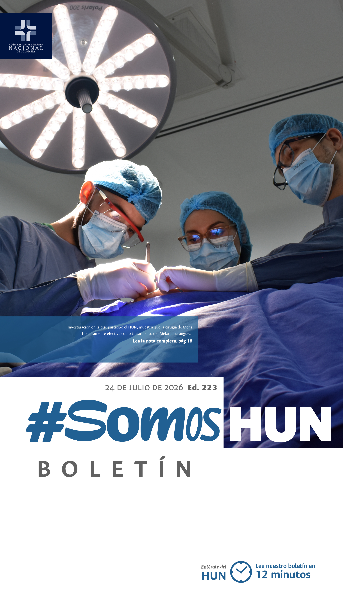
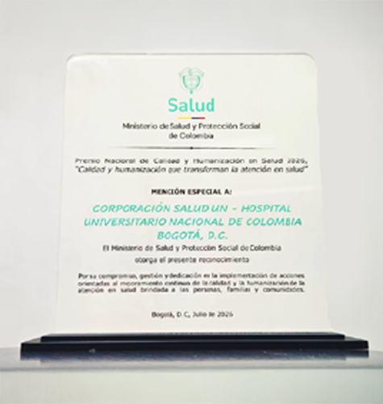
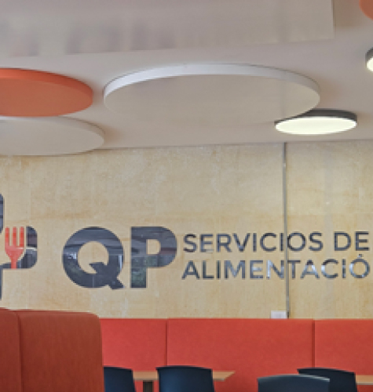
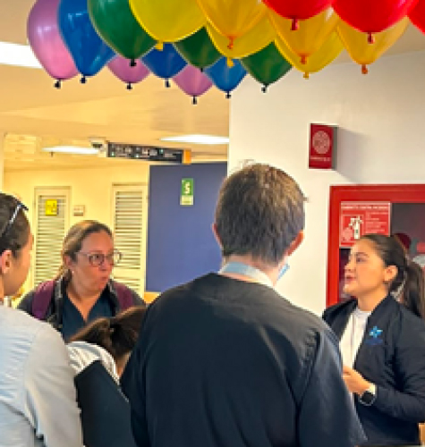
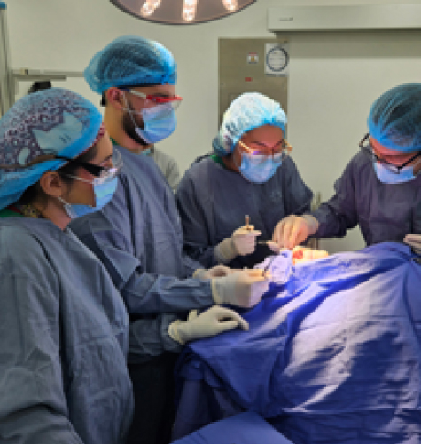

Ver todos los boletines
HUN recibe reconocimiento nacional por hacer de la calidad y la humanización una sola forma de cuidado
Pacientes hospitalizados que pueden reencontrarse con sus mascotas, familias provenientes de otras regiones que reciben hospedaje y acompañamiento, y especialistas que atienden a distancia a comunidades apartadas forman parte de las iniciativas que le valieron al HUN de Colombia (HUN) una mención especial en el Premio Nacional de Calidad y Humanización en Salud 2026, otorgado por el Ministerio de Salud y Protección Social y la Organización Panamericana de la Salud (OPS/OMS).Leer más
El HUN fortalece la gestión de eventos centinela con lineamientos internacionales
El Hospital Universitario Nacional de Colombia presentó la actualización de la Ruta de Gestión Integral de Eventos Centinela, un modelo que incorpora los lineamientos más recientes de la 8.a edición de Joint Commission International (JCI) y del National Quality Forum (NQF) 2025, fortaleciendo los procesos de análisis, respuesta y mejora continua frente a los eventos que pueden comprometer la seguridad durante la atención en salud.Leer más

Bienestar y confort son prioridades para el HUN
Con el propósito de brindar espacios más cómodos, funcionales y agradables para el bienestar de los colaboradores, estudiantes y pacientes, el Hospital Universitario Nacional de Colombia realizó la renovación de la cafetería y el restaurante. Estas adecuaciones buscan mejorar la experiencia durante los momentos de descanso y alimentación.Leer más

Cómo se vivió la primera feria de la cultura organizacional en el HUN
Con el propósito de fortalecer el sentido de pertenencia, promover los valores institucionales y seguir consolidando una cultura organizacional sólida, el HUN realizó con éxito la I Feria de Cultura, un espacio de encuentro que reunió a colaboradores y estudiantes en torno a actividades diseñadas para reconocer aquello que nos identifica como institución.Leer más

Cirugía de Mohs aporta evidencia científica para el manejo de melanoma ungueal, evitando amputaciones innecesarias
Un estudio con diez años de seguimiento, publicado en Dermatologic Surgery, demuestra que la cirugía micrográfica de Mohs logró eliminar completamente el tumor en todos los pacientes tratados, sin recurrencias ni muertes relacionadas con melanoma a cinco años, preservando la función de los dedos y abriendo nuevas perspectivas para el tratamiento de este cáncer de piel en América Latina.Leer más